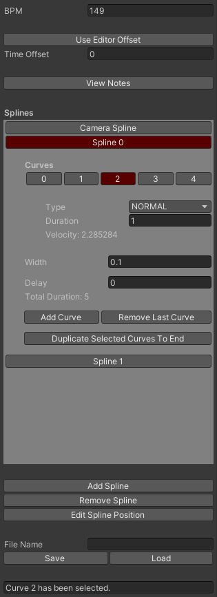

The previous curve editor ended up having plenty of UX issues and was not able to implement the new design for the game.
For one, there was intense lag when dragging points around. To address this, the renderer only renders in the editor when the handle is finished being dragged.
The curves have been converted from SDFs to meshes to support consistent texturing, as seen in the preview video.
To support multiple splines, the editor now focuses on a per spline basis. This gives the user much more control over the spline's overall position.
Multiple splines/curves can be selected by holding the Ctrl key. The Ctrl key can also make curves straight when held while editing the curve in the scene view.
Other options can be seen in the image above.
The editor now also supports autosave, preventing the designer from accidently losing their work.